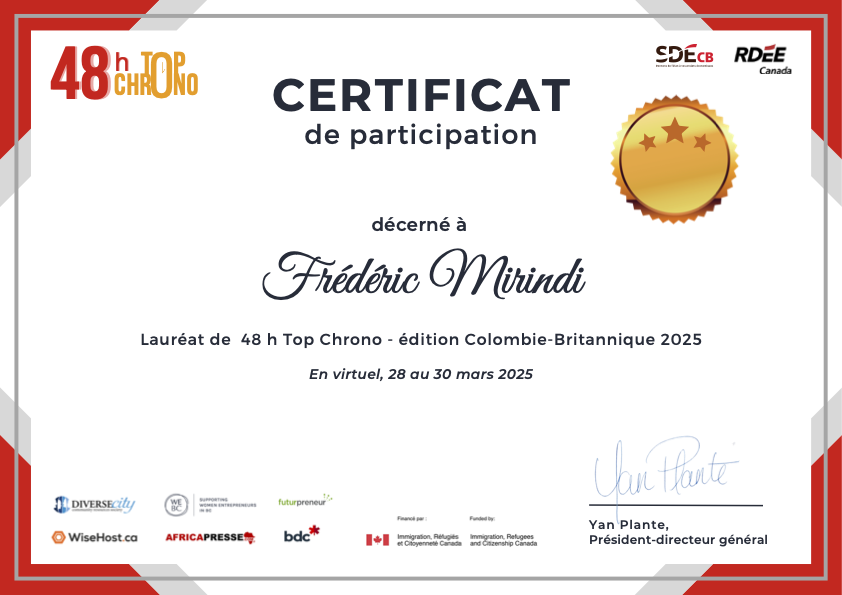
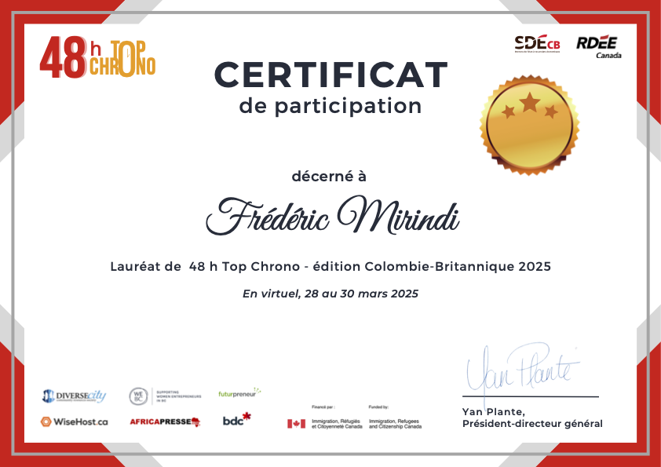

Research
Exploring Econometrics, Macroeconomics, and Financial Economics, with a focus on AI/ML applications.
Research Interests
My primary research areas span across modern econometric methods and their application to macroeconomic and financial questions, with a growing focus on computational techniques:
Econometrics (causal inference, time series analysis, microeconometrics)
Macroeconomics (monetary policy, DSGE models, growth dynamics)
Financial Economics (risk modeling, financial forecasting, asset pricing)
Integration of Artificial Intelligence and Machine Learning in economic modeling. (See AI/ML Projects)
Selected Publications
Google Scholar | ORCID | ResearchGate
Below is a selection of my peer-reviewed articles, book chapters, and conference contributions. Please refer to my CV or online profiles for a comprehensive list.
-
Applications of Machine Learning Algorithms on the Compressive Strength of Laterite Blocks Made with Metakaolin-Based Geopolymer and Sugarcane Molasses
David Sinkhonde, Derrick Mirindi, Ismael Dabakuyo, Tajebe Bezabih, Destine Mashava, Frederic Mirindi. Cleaner Waste Systems, Elsevier, 2025.
-
Ensemble Machine Learning Algorithms for Efficient Prediction of Compressive Strength of Concrete Containing Tyre Rubber and Brick Powder
F. Mirindi (with D. Sinkhonde, T. Bezabih, D. Mirindi, D. Mashava). Cleaner Waste Systems, Elsevier, 2025, 100236.
-
A Review on Aerospace-AI, with Ethics and Implications
F. Mirindi (with D. Mirindi, D. Sinkhonde, T. Bezabih). Journal of Civil, Construction and Environmental Engineering, 2025.
-
Structural Performance of Boards through Nanoparticle Reinforcement: An Advance Review
F. Mirindi (with D. Mirindi et al.). Nanotechnology Reviews, 13(1), 2024, 20240119.
-
An Advance Review of Urban-AI and Ethical Considerations
F. Mirindi (with D. Mirindi and D. Sinkhonde). In: Proceedings of the 2nd ACM SIGSPATIAL International Workshop on Advances in Urban-AI, 2024, pp. 24-33.
-
Artificial Intelligence (AI) and Automation for Driving Green Transportation Systems: A Comprehensive Review
F. Mirindi (with Derrick Mirindi and Alex Khang). In: Driving Green Transportation System Through Artificial Intelligence and Automation: Approaches, Technologies and Applications, Springer, 2025, pp. 1-19.
-
Three Chapters in Revolutionizing Digital Healthcare Through Artificial Intelligence and Automation
F. Mirindi (with Derrick Mirindi and Alex Khang). Elsevier, September 2025. Chapters include: "Optimizing ML Algorithms...", "Integration of AI and AR...", "Revolutionizing Medical Imaging...".
-
Forecasting Energy Prices using Machine Learning Algorithms: A Comparative Analysis
F. Mirindi. In: Studies in International Series in Operations Research & Management Science, Springer. (Accepted, forthcoming 2024).
-
BIM-Driven Offsite Construction: Pathway to Efficiency, Functionality and Sustainability
F. Mirindi (with D. Mirindi). In: Transforming Construction with Off-site Methods and Technologies Conference, 2024.
-
An Advance Study of Recycled PP, HDPE and PET Fibers with the Application of Machine Learning to Enhance Concrete Compressive Strength
F. Mirindi (with D. Mirindi and D. Sinkhonde), 2024.
Conference Presentations
I have presented my ongoing and completed research at various national and international conferences, workshops, and seminars.
Family Size and Child Outcomes in Sub-Saharan Africa: The Role of Social Norms.
59th Annual Meetings of the Canadian Economics Association (CEA), Université du Québec à Montréal (Accepted, May 29-31, 2025).Digital Feminism: Intersectionality and Activism in the Age of Social Media.
Graduate Seminar Series, Centre for the Study of Women and Gender (CSWG), University of Warwick (Jan 22, 2025). Event LinkFrom Rubber to Cobalt: Evolving Patterns of Resource Exploitation and Social Impact in the Democratic Republic of Congo.
Graduate Seminars in Economic and Social History, University of Oxford (Nov 27, 2024). Event LinkA Review of Hybrid Machine Learning Approaches for Enhancing Human-Agent Interaction.
TheoriseHAI Workshop, 12th International Conference on Human-Agent Interaction (HAI), Swansea, UK (Nov 24-27, 2024). Workshop PageNavigating the Digital Frontier: Social and Economic Impacts of Digital Transformation on Communication, Language, and Culture.
1st International Conference on Social Sciences and Economics (IConSE 2024) (Sep 21, 2024). Proceedings PaperNeural Networks for Predicting Market Trends in Sustainable Industries: A Review.
International Conference on Recent Advances in Artificial Intelligence for Sustainable Development (RAISD 2025), Jharkhand Rai University, Ranchi (March 7-8, 2025).
Online Publications & Media
Beyond academic publications, I occasionally contribute articles and commentary on economic topics to online platforms.
Revolutionizing Science with AI: From Hypothesis Generation to Anomaly Detection
Medium (March 29, 2025)
Condensed insights from a CEPR webinar on AI's transformative influence on scientific research.
La Journée internationale des femmes au Manitoba: Célébration et réflexion
WebOuest, Winnipeg (March 13, 2024)
Explored gender equality as a pillar of inclusive economic development.
Célébration de l'héritage et des contributions des Noirs au Canada: Un regard approfondi
WebOuest, Winnipeg (February 26, 2024)
Discussed the economic and cultural contributions of Black communities in Canada.
A list of scholarships and awards received can be found on the dedicated Awards & Recognitions page.
Academic Certificates
Les certificats défilent les uns après les autres :
 
